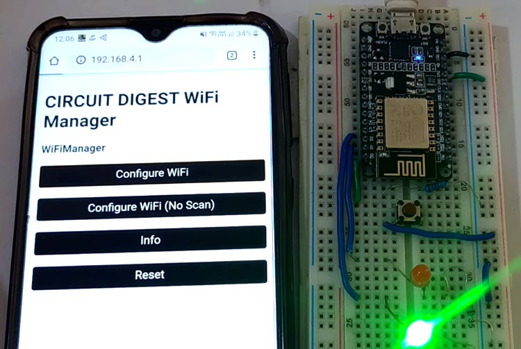
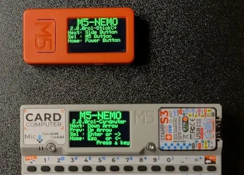
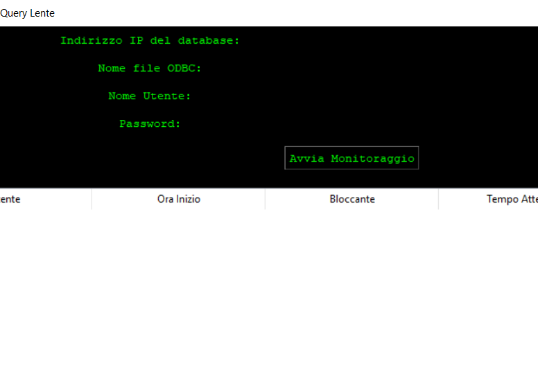
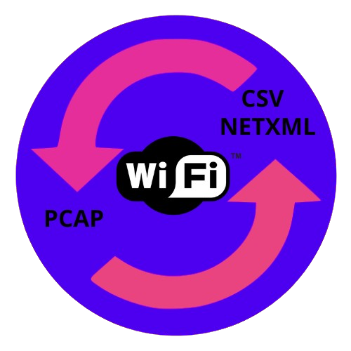
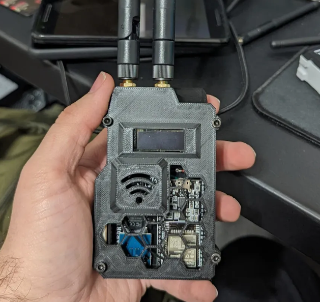

Hello, my name is Daniel
I'm a Computer Scientist
I'm a Computer Scientist with a passion for technology.
Graduated from the European Informatics Passport - EIPASS
Code is the poetry that programs our dreams.
About Me
I'm Daniel and I'm a Computer Scientist
From a young age, my fascination with technology came to life as I eagerly disassembled every electronic device at home, searching for the magic within the circuits. Today I am an Technical Specialist, a Cybersecurity/Pentester, a Web Master and as a hobby I create 3D prints. I also have experience in assembling computers, solder electronic components and Engineering DIY electronics from concept to creation, and sharing them digitally with fellow tinkerers and innovators
Birthday: May 2003
Age : 22
Website : https://linktr.ee/_danybit_
Email : danielmantovaniproject@gmail.com
Degree : Web Master | Digital Marketing
City : Como / Milan, Lombardy, Italy
Freelance : Available
HTML 5
Batch
CSS
C
Education
2023 - 2023
Comptia Security+ (SY0-601) Dion Training
I completed the CompTIA Security+ (SY0-601) course through Dion Training, gaining a solid foundation in cybersecurity principles. The program covered essential topics such as network security, threat detection and response, risk management, identity and access management, and best practices for securing systems and data in enterprise environments. It prepared me to understand and handle real-world security challenges using industry-standard frameworks.
2023 - 2023
Front-End Development & Technical Support - Rete Informatica Lavoro
I completed a training program in Front-End Development & Technical Support through Rete Informatica Lavoro, where I gained practical skills in building responsive web interfaces and providing IT support. The course covered key technologies such as HTML, CSS, JavaScript, as well as troubleshooting techniques, system maintenance, and customer assistance best practices.
2019 - 2020
European Informatics Passport - EIPASS
Certified in essential IT skills: digital literacy, office suite (Word, Excel, PowerPoint), internet and email use, data security, and basic IT management in professional settings.
2020 - 2022
Web Master | Web Developer
Trained in web design, front-end development (HTML, CSS, JavaScript), basic back-end (PHP, MySQL), CMS management (e.g. WordPress), responsive design, SEO, UX/UI, and website maintenance.
Experience
2024 - Present
IT Helpdesk – Client Coordination
In my role within IT systems and data infrastructure, I have been responsible for maintaining and optimizing SQL databases, ensuring both performance and data integrity. I’ve managed data handling tasks, including analysis and ETL processes, to better align technical systems with business needs and improve data accessibility. I provided both first and second-level technical support, ensuring high customer satisfaction through efficient troubleshooting and communication. I was also involved in full lifecycle ticketing operations—diagnosing issues, resolving them, and maintaining detailed logs. My experience includes managing Linux and Windows environments, with a focus on system stability and performance.
2023
✦ Electronics Testing & Repair
During my time working for a prestigious electronics company in Italy, I specialized in the repair and testing of complex electronic boards. My responsibilities included component replacement, soldering, short circuit removal, and switch repositioning. I operated and maintained testing tools such as SPEA Flying Probe systems, soldering/desoldering stations, and hot air tools. I also programmed and fine-tuned test machines (notably Leonardo 2.0), managing tolerance settings and tip calibrations. Throughout this process, I closely monitored automated testing procedures and ensured full traceability by logging all repairs and modifications.
2022
✦ CNC Programming & Machining
In a separate role, I worked with CNC machinery, programming equipment using dedicated software to meet specific technical requirements. I adjusted machine settings to ensure optimal precision, loaded raw materials for processing, and continuously monitored machining operations to maintain both efficiency and quality standards. This hands-on experience strengthened my understanding of industrial processes and mechanical systems, further broadening my technical capabilities.
Services
Technical Assistance
Smartphone, PC, Mac, Raspberry, etc.
Web Page and Web Design
I develop web pages according to your tastes.
3D Prints
I create 3D objects of any shape or type.
App and Script Programming
Do you need an app to do a job? Or a script to manage your activities in a smart way? Contact me.
Cybersecurity & Penetration Testing
find the flaws, strengthen your systems, protect your business
Other Service
Contact me if you need other technical help.
Portfolio
Wi-Fi Security Testing with NodeMCU
Developed a tool using NodeMCU (ESP8266) to analyze and test 2.4GHz Wi-Fi network security. Implemented deauthentication attacks and network scanning to evaluate vulnerability levels in real environments.
View Project
M5StickC Plus – NEMO Captive Portal
Developed a portable Wi-Fi testing tool with M5StickC Plus and NEMO firmware. Created a rogue access point with captive portal to capture credentials and demonstrate social engineering risks. Supports SSID cloning and real-time monitoring for educational use
View Project
Database Lock Monitor
Developed a Python GUI application for managing SQL databases via ODBC. Designed to monitor slow queries in real time and terminate connections when table locks are detected, improving database performance and availability.
View Project
PCAP-Fuser-Converter
Python-based GUI app to merge, convert and analyze PCAP/PCAPNG files. Includes CSV and NetXML export for Wi-Fi data analysis and Wigle.net uploads. Clean interface built with Tkinter.
View Project
Robo-copy Folder Mover
Frustrated by Epic Games' lack of folder moving support (unlike Steam), I created a script that automates transferring game installations between drives. It handles file movement and ensures the launcher detects the new path—no reinstallation needed.
View ProjectCustom Wardriving Devices
Designed and built wardriving devices by assembling and soldering components, combined with 3D-printed custom enclosures for enhanced portability and protection.
View Project
Contact Me
Have You Any Questions ?
I'M AT YOUR SERVICE
Call me On
+39 3515788950
Office
Como, Italy
danielmantovaniproject@gmail.com
www.instagram.com/_danybit_/